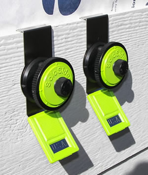

These tools allow one person to install up to twelve inch siding
100% Made In The U.S.A.
Patent #7,213,346
No sales tax if purchased on webpage. Please purchase from the webpage. It will help Mom and Pop make more money and Cathy will send you a small gift.
Figure A
As you can see by the graphic in Figure A, we adjust the overlap which also changes the reveal using a full rise cam. Total cam adjustment is 1/4in. using 1/16 increments. The flat is the release position.

Figure B
Look at the photo in Figure B and you can see how these different ranges are engaged. Grasp the small knob and give it a push and twist and it will separate. Move to the range you are using and reengage making sure to keep the SoloSider name upright. You do not separate the knob to release the tool from the siding. In certain cases where you are blocked by a soffit you can use this method.
Hook the SoloSiders onto the first coarse of siding that you have installed making sure that it is level. If hanging a 12' board keep them in about 3' from each end. Place a board on the tools. At this time you know what reveal or overlap you are using and have set the tools accordingly.
Place a nail thru the board into the closest stud to the tool down about 1/2in. from the top and leave it proud about 1/8". Do this for both tools. Now turn the cam to the release position going counter clockwise and putting the arrow in the 12 oclock position. Push the tool up pull the siding out enough to get the tool out. Reset the tools and hang them on this board before nailing it off to code.
When hanging 16' LP Smartside 3/8 or 7/16 Place the tools about a foot in from each end and use the same nailing procedure as above and then go to the center of the board and lift the sag out and nail. (use a face gauge or a tape)



We have spared no expense on the quality of these tools and the bean counter was silenced. If something breaks (doubtful) send it back and it will be replaced, no conditions.
A good example of using a adjustable siding tool to install siding is when you have a porch ceiling that is out of whack, say by 3/8 in.per 12'. Place one SoloSider on the lower course of siding (which is parallel to the deck) set at 1 1/4 overlap . Set the other at 1 5/16. By the time you do the sixth course the 3/8in. mistake disappears. Make sure the 1 5/16 adjustment is on the short side of the porch.
Shipping is Included for all tools. All taxes and custom duties are the responsibility of the buyer. All tools will do 12in. siding and are sold as pairs. This means that you get 2 for the price shown.
Purchase Solosider
You can pay by credit card using the PayPal checkout on this page. You will be taken to a secure page on PayPal to do this. You do not need a PayPal account and do not need to apply for one. Just click checkout and choose pay as a guest and pay with a credit or debit card.
Or purchase on EbaySend payment to:
SoloSider LLC
94295 Mill Stream Rd.
Gold Beach Oregon 97444
For customer service, or to order by phone please call 541-247-8306
or Email
cathy@solosider.com
Please make sure to include your shipping address and allow 3 days for delivery.
There is a unconditional repair or replacement guaranty.
We ship USPS priority mail unless another service is requested.
We never sell or share customer information.
stats